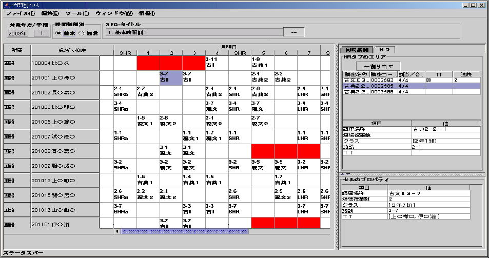
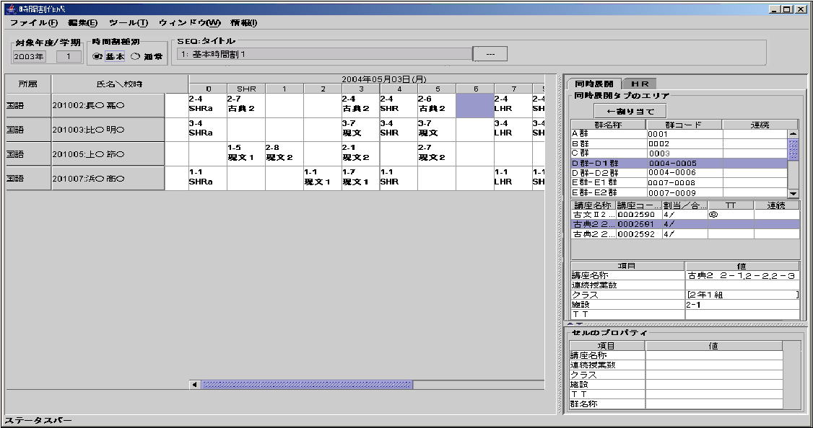

時間割作成(KNJB040)
「基本時間割」、「通常時間割」を作成する。時間割作成とは授業（以降、「コマ」と呼ぶ）を時間割表に割当てる事である。
授業は「HR」と「同時展開」の２つに大別され、各々、「TT」、「連続授業」などの属性を持っている。
パラメータ
| 職員コード |
staffcd |
999999 |
| DB名 |
dbname |
|
主な関連テーブル
- sch_ptrn_dat
- sch_ptrn_hdat
- sch_chr_dat
- chair_dat
- chair_set_dat
- sch_fac_dat
- chair_fac_dat
- staff_ydat
- staff_mst
- section_ydat
- section_mst
- electclass_rela_dat: 選択群親子データ
その他
- 次のフェーズ対応（作成支援）
- 「基本」から「通常」画面に遷移した際は、システム日付をデフォルトとする。
- TTの授業に対応している。
- 連続授業に対応している。
- DBに接続するID、パスワードやリンク先URLなどは properties ファイルに持つ。
◎共通
メニューバー
| ファイル(F) |
編集(E) |
ツール(T) |
ウィンドウ(W) |
情報(I) |
| 保存(S) |
全てクリア(Clear) |
自動コマ割り(Auto) |
名簿入力(M) |
時間割作成について．．．(About) |
| 名前を付けて保存（新規）(A) |
割り当て(Assign) |
CSV取込み(C) |
ＨＲ別時間割確認(H) |
|
| 終了(X) |
削除(Delete) |
|
施設別時間割確認(S) |
|
|
入れ替え（移動）(Swap) |
|
時間割反映(J) |
|
|
取消(U) |
|
|
|
- 保存
- 編集中の時間割を保存する。
- 名前を付けて保存
- 基本時間割の時に使う。詳細は後述している。
- 終了
- 時間割作成の終了
- 全てクリア
- 時間割の全講座を削除する
- 割り当て
- 選択されているセルに、選択されている講座（または群）を割り当てる
- 削除
- 選択されているセルの講座を削除する
- 入れ替え
- ？？？？オペレーション不可？？？
- 取消
- 直前の状態に戻る
- 自動コマ割り
- 保留
- ＣＳＶ取込み
- 保留
ヘッダーエリア
メインエリア
- 月曜日からの先頭１週間表示固定とする。が初期表示は指定した日付もしくは指定した曜日を表示する。
- 右クリックするとコンテキストメニュー（ポップアップ）を表示。
- 左クリックでセルを選択状態にする。
- 「割当済み校時数」欄には、その行の割当たっている授業の合計を表示
- 教師が稼動できない校時のマスは色などでわかるようにする。講座の割当は可能。
- 同時展開は若い年組を表示し、その後ろに同時展開マーク、「＊」を付ける。
⇒例） "1-1*"
- HRタブの場合、所属でグループ化し、年度の教師(正担任のみ)を表示する。
- 同時展開タブの場合、メインエリアでの教師、タブエリアでの群に属する教師のみを表示する。
- 連続授業を割り当てたい場合は、隣接する校時に対してオペレータが同講座を割り当てる。結果、連続授業になったということで、時間割プログラム上では割当に対する連続か単一かの区別はしない。
- セル上で右クリック
- [割当]
タブで選択されている講座（または群）がセルに割り当てられる。
- 既に講座がある場合はエラー （それとも[割当]を選択不可にする？）
（その講座を移動などして割り当てさせる）
- TTで他の教師が、その校時に割り当てられない状態（他の授業割り当て済み）ならエラー。
- 講座が割当数に足りない、または超えていても割り当て可
（チェックリスト対象）
- 教師の稼働時間を超えている場合でも割り当て可（チェックリスト対象）
- [削除]
セル上にある講座が削除される。
空白セルでは選択不可。
- [入れ替え（移動）]
選択されたセルとマウスポインタ上にあるセルを入れ替える。この機能は同一行に対してのみ有効
片方が空白セルなら移動という事になる。
- [プロパティ]
選択されている講座（セル）のプロパティをダイアログ表示する。空白セルでは選択不可。
同時展開授業の場合、群名称も表示する。
セルの状態の表現
背景色のパターン
| 状態 |
前景／背景 |
色 |
備考 |
| セルの選択状態 |
背景 |
紫 |
Javaのデフォルトがこうなっている |
| 編集したマーク |
背景 |
黄色 |
保存が押されるまでに、いじったセル |
| データ区分 |
背景 |
グレー |
過去に変更された、または削除されたセル |
| 教師稼動不可 |
背景 |
赤 |
|
※状態は上に行くほど強い。すなわち、「教師稼動不可かつ、データ区分が立っているマス」は背景色がグレーとなる。
文字色のパターン
| 状態 |
前景／背景 |
色 |
備考 |
| 出欠済み |
前景 |
青 |
|
タブエリア
「HR」、「同時展開」のタブが存在する。
講座（または群）のダブルクリックでメインエリアの選択セルに割り当てられる。
- HRタブ
- 上部に教師の持っている講座の一覧を表示する。下部にはその選択されている講座のプロパティが表示される。
- 上部に表示する項目
- 下部に表示する項目
- 連続授業数
- 施設（１つのはず）
- ＴＴ（複数の教師が表示される）
- 同時展開タブ
- 全ての群の一覧を表示する。下部にはその選択されている群のプロパティが表示される。
- 上部に表示する項目
(選択群親子データから引っ張ってくる。全レコードでよい)
- 群コード（入れ子の場合、親群コードと子群コードをハイフンで連結。例）9999-1234）
- 群名称（入れ子の場合、親と子の名称をハイフンで連結）
- 連続授業（ぶら下がる講座が１つでも連続ならＯＮ（１つの講座が連続なら他も連続でしょう））
- 下部に表示する項目
プロパティエリア
タブエリアの下に常に表示される。メインエリアで選択されているセルのプロパティを表示する。
◎基本
ヘッダーエリア
- 「SEQ:タイトル」コンボボックスより既存の基本時間割を読み込むことが出来る
編集中の時にコンボを変更されるとワーニングダイアログを表示。
- SEQは年度ごとに１から始まり、自動採番である。
- 「名前を付けて保存」で新規に基本時間割を作成することが出来る。
ダイアログを表示し、「年度」・「学期」・「タイトル」を入力させる。
- 講座が設定されている場合、「年度」・「学期」が講座データに存在すれば、コピーする。
存在しない講座があれば、メッセージを表示し、コピーの対象から除外される。
- 空白の新規をしたい場合、オペレータは事前に「全てクリア」していればよい。
メインエリア
タブエリア
講座（または群）のダブルクリックでメインエリアの選択セルに割り当てられる。
- HRタブ
- 上部に教師の持っている講座の一覧を表示する。下部にはその選択されている講座のプロパティが表示される。
- 同時展開タブ
- 全ての群の一覧を表示する。下部にはその選択されている群のプロパティが表示される。

◎通常
ヘッダーエリア
- 実施期間の開始ボタンは指定の日を表示し、終了のテキストフィールドはその週の最後（日曜日）が表示される。
メインエリア
- 既に割り当てられている講座（DBに登録されている講座）を「削除」または「他の講座に置き換え」た場合は、[時間割講座データ．データ区分]フラグを立てる。フラグが立っている状態をオペレータがわかるようにする（色分けできれば良いが・・・）
- [時間割講座データ．出欠フラグ]が立っている講座は編集の対象外となる。セル上では文字色などを変えるなどする。
同時展開講座の場合は関連する他の講座を含めて１つでも立っていれば、その群全体が対象となる。
- 削除された講座の講座コードは０
タブエリア
